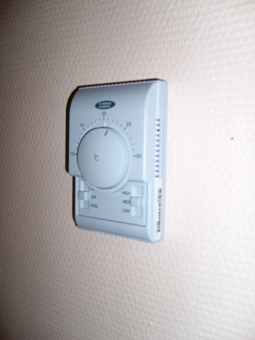

Электрика офиса от частного электрика.
Качественный электромонтаж в Санкт-Петербурге и ленобласти, стаж 12 лет. Частный электрик, недорого и качественно.
Николай.

Здравствуйте! Вы зашли на сайт частного электрика. Меня зовут Николай и сегодня я расскажу Вам об электромонтажных работах в офисных помещениях. Но сначала немного о себе.
|
Площадь пола офиса. |
Цена за электромонтаж в руб. |
Цена за работу + материалы для электромонтажа. |
|
Пол офиса 60 кв. м. |
40 000 |
55 000 |
|
80 |
55 000 |
73 000 |
|
100 |
75 000 |
98 000 |
|
120 кв. м. |
94 000 |
115 000 |
|
150 кв. м. |
105 000 |
133 000 |
|
200 |
145 000 |
177 000 |
|
250 кв. м. |
180 000 |
225 000 |
Общие сведения.
Любой офис, как никакое другое помещение, нуждается в постоянном и стабильном электроснабжении. Можно только представить, что произойдет при коротком замыкании: хаос, невыполненные в срок обязательства и не отправленные документы, срыв сроков поставки и деловых обязательств и т.д.
Современные стандарты электроснабжения предъявляют довольно жесткие требования к проведению электрики в офисе. А теперешние зимы заставляют задуматься об источниках бесперебойного снабжения и безопасности в ситуациях с отключением электроэнергии.
Довольно часто под офисное помещение сдаются старые квартиры, электросети которых уж никак не рассчитаны на современное оборудование и нагрузки. В этом случае проблемы с электросетью просто неизбежны. В подобных помещениях проводку и электрооборудование приходится менять полностью, а также составлять новую схему и рассчитывать нагрузки. Помимо этого нужно подключать на постоянную работу дорогостоящую оргтехнику, выход из строя которой равен пожару.
Если офисное помещение новое, его также необходимо подготовить и подключить к сети.
Что входит в электромонтаж офиса?
В электромонтаж промышленных сетей в офисе входят следующие работы:
- Резка штроб и выполнение технологических отверстий;
- Прокладка кабеля и проводов;
- Установка монтажных и распределительных коробов;
- Сборка различных щитов;
- Монтаж выключателей, розеток и светотехники;
- Подключение бытовой техники, аппаратуры и офисной оргтехники.
Важные аспекты электрики в офисе:
- правильный расчет систем защиты, а также проводов и кабелей;
- закупка качественного оборудования и стройматериалов;
- сварка распределительных коробок;
- качественный обжим всех соединений;
- профессиональный монтаж светотехники.
Ремонт офисной проводки.
В эту услугу входит: замена светотехники и фурнитуры, замена аппаратуры защиты и замена (ремонт) стабилизаторов.
Частичная замена офисной электропроводки.
Данная услуга предполагает: ремонт электропроводки (поиск повреждений, вскрытие и замена), монтаж кабель каналов, перенос розеток и выключателей, замена вводного кабеля в офис.
Монтаж электропроводки для нового оборудования.
Осуществляется для подключения офисных кондиционеров, светотехники, для установления стабилизаторов и систем бесперебойного питания для компьютеров.
Электрика офиса: демонтаж старой и установка новой электропроводки, монтаж светотехники, установка новой фурнитуры и аппаратуры защиты, а также групповых источников бесперебойного питания.
Обслуживание офисных электросетей: периодическая подтяжка контактов защитной аппаратуры, Замена лампочек и трансформаторов питания, а также блоков защиты. В эту же категорию входит мелкий ремонт светотехники.
Обслуживание дополнительных сетей офиса: небольшой ремонт и замена мелких деталей.
Электромонтаж офиса имеет ряд своих особенностей, требующих определенных знаний и умений. Поэтому доверять его выполнение следует только опытному электрику, знающему все требования нормативных документов. Не нужно рисковать, ведь «на кону» бесперебойная работа офисной техники и обеспечение комфортных условий сотрудников.
 Поменять проводку в квартире.
Поменять проводку в квартире. Сколько будут стоить материалы.
Карта сайта.
Замена электропроводки в панельном доме.
Расценки на электропроводку квартир.
Замена проводки в хрущевке.
Электромонтаж в частном доме.
Электрика в загородном доме.
Сколько стоит замена электропроводки в двухкомнатной квартире?.
Сколько стоит проложить проводку в 3 ком квартире?
Сколько стоит проложить проводку в четырех комнатной квартире?
Сколько стоит сделать внутреннюю проводку?.
Стоимость штробление стен.
Установка люстр и светильников.
Замена электропроводки в панельном доме.
Электромонтаж проводов в бане.
Электрика в загородном доме